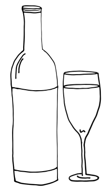
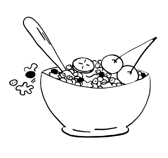
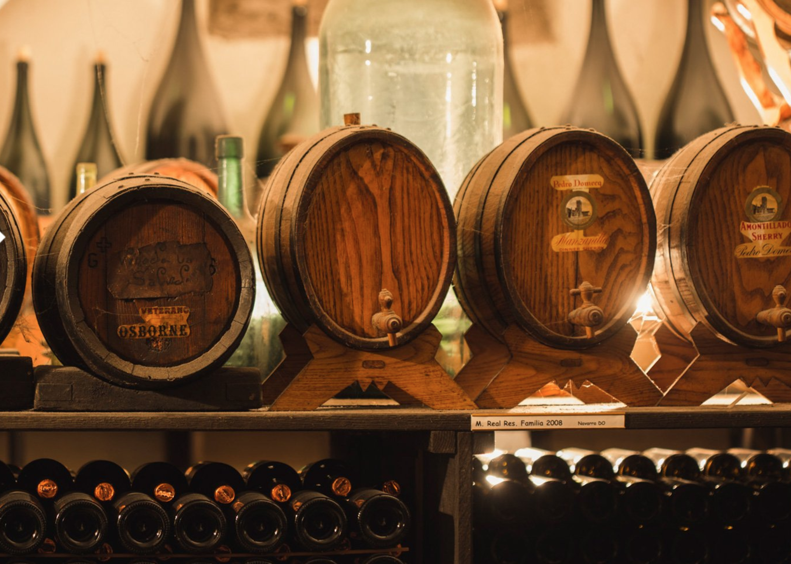
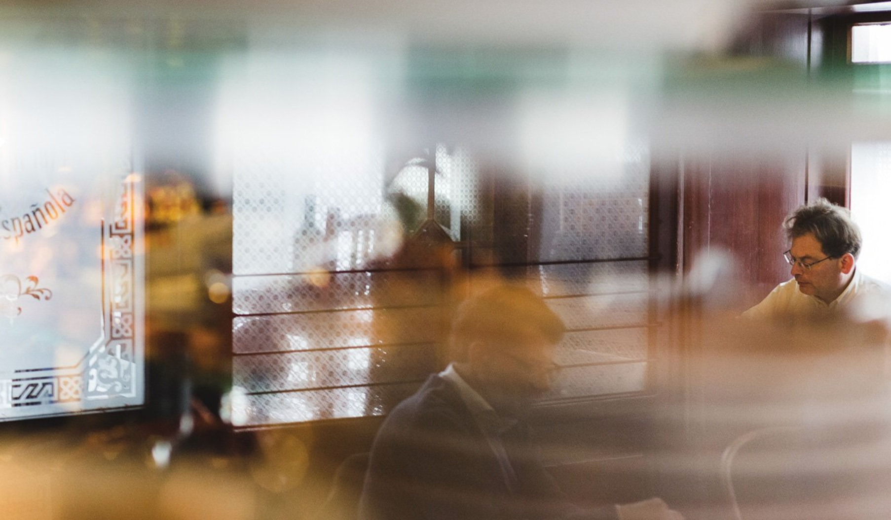
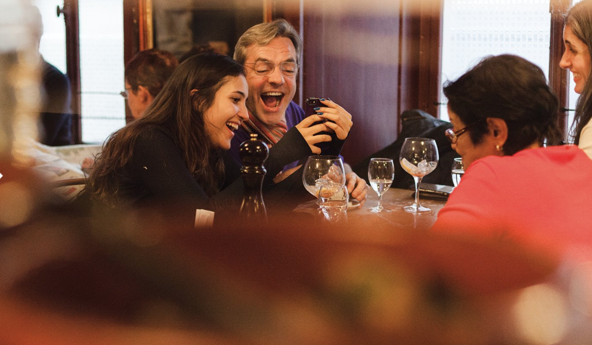
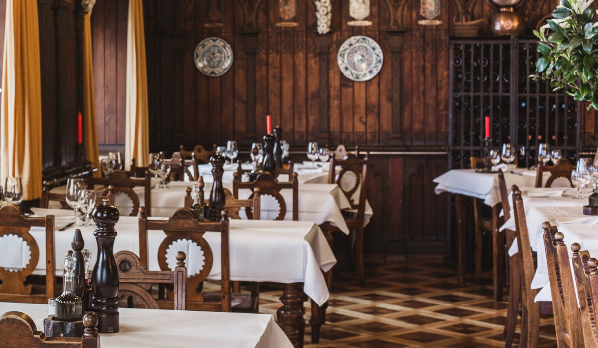

Vitus
Die Bio-Einkaufsoase mit
kleinen Trouvaillen
Reformahaus in altem Gemäuer mit über 3500 bio Lebensmitteln und Naturkosmetik
Schwarzenbach Teecafé
Stilvolles Teecafé in ehemaligem Kaffeelager
Ausgesuchte Kaffeekreationen, viele Teesorten und Gebäck aus hauseigener Backstube
Cafe und Restaurant Schlauch
Biliard in speziellen Ambience für Freunde von geselligen Runden
Neben Biliard, Pool und Carambole gibt es hier auch unsere stadtbekannte Rösti
Contra-Punkt
Zeitlos-Schönes für das individuelle Wohnen
Reizvolle Eigenkreationen und Unikate mit Charme, ein buntes Sortiment
Bodega Espanola
Älteste spanische Weinhandlung in Zürich mit eigenem Restaurant
Zusammensitzen, diskutieren, lachen, trinken, Tapas essen und natürlich Leute kennen lernen!
+



←
My Müesli
Müesli-Eigen-
mischungen für
Umweltbewusste
mischungen für
Umweltbewusste
Frisches Bircher-Müesli aus
ausschliesslich Bio-Zutaten –
auch zum mitnehmen
ausschliesslich Bio-Zutaten –
auch zum mitnehmen
Andorra Bar
Historisches Café für bekennende Geniesser
Ehemaliges Stammlokal von Max Frisch, heute Jazz-, Trink- und Tapaskulturn
←Zurück zur Hauptansicht


Herzlich Willkommen in der Bodega Española in der Zürcher Altstadt! Die älteste spanische Weinhandlung in Zürich mit eigenem Restaurant wurde 1874 gegründet. Seit den 50er Jahren wird die Bodega, in spanischer Tradition von der Familie Winistörfer mit den rund 30, meist iberischen, Mitarbeiter weiter geführt.
Mit gewissen Restaurants ist es wie mit guten alten Bekannten: Man trifft sie nach Jahren wieder und versteht sich so gut, als hätte man sich erst tags zuvor das letzte Mal gesehen. Und man hat den Eindruck, es habe sich in der Zwischenzeit nichts verändert.
Wenn das auf ein Zürcher Lokal zutrifft, dann auf die Bodega Espanola in der Altstadt. Jahrelang gingen wir da ein und aus. Wir liebten das Lokal, besonders das Erdgeschoss. Nirgends in der Stadt war für uns Spanien näher, nirgends schmeckten Rioja, San Miguel und Calamares besser (und waren doch noch bezahlbar), nirgends traf man solch kunterbunte Tischnachbarn. Immer, über Jahre. Olé!Schlemmen in der Tapas- und Weinbar
+
←Zurück zur Übersicht

